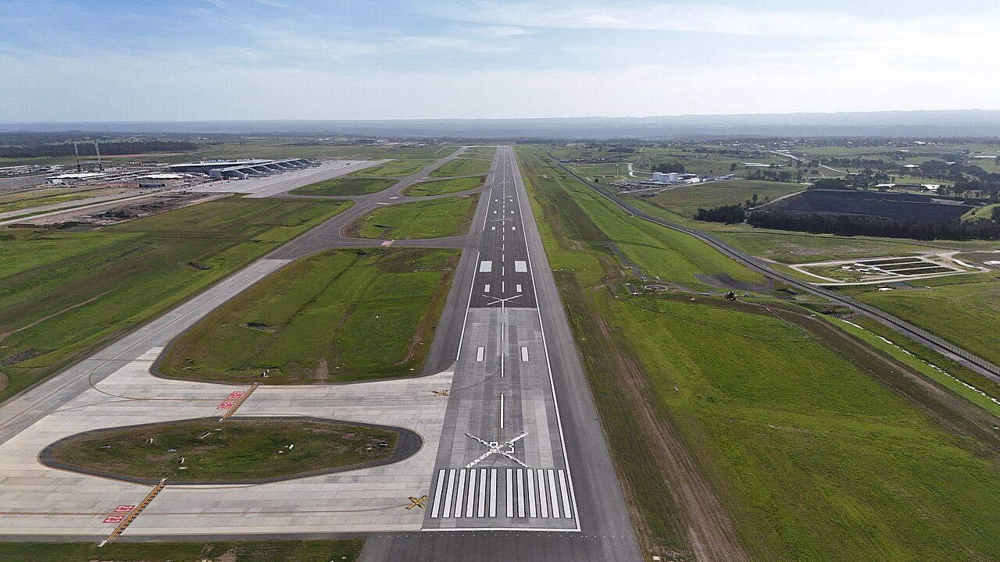
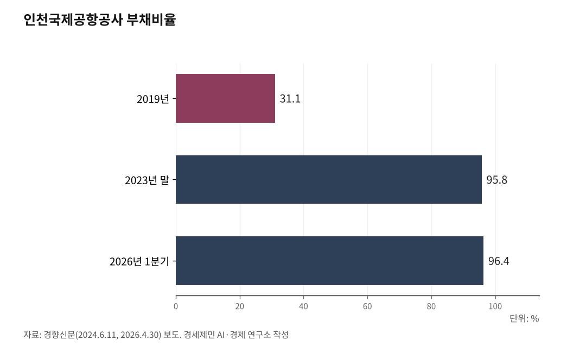

[세계3위 인천공항미래⑭] 흑자 절반은 국고로, 부채비율 96%… 배당을 5단계에 묶어야 한다
통합은 막았지만 배당 유출은 그대로, 흑자를 국고에 내주는 사이 부채비율이 96%까지 찼다
창이는 승객 돈을 확장기금에 담고 정부도 8조를 넣는데, 인천은 흑자를 배당으로 뺏긴다
AI경세제민=김갑봉 기자 | 인천국제공항공사 부채비율이 2019년 31.1%에서 2026년 1분기 96.4%로 뛰었다. 흑자를 내면서도 부채가 는 것은, 번 돈을 국고 배당으로 내주면서 확장은 빚으로 메운 탓이다. 지난 16년 국고로 간 배당이 3조3463억원, 6조원으로 추산되는 5단계 확장의 절반을 넘는다.

넉 달을 끈 공항 통합 논란은 2026년 7월 백지화됐다. 위기 하나는 넘겼다. 그러나 흑자를 국고로 걷어가는 배당 구조는 그대로 남았다. 인천의 문제는 돈이 없어서가 아니라, 번 돈이 결과로 돌아오지 못하는 데 있다.
흑자를 내는데 부채는 는다
인천은 제 돈으로 컸다. 1~4단계 약 18조원 가운데 82%를 자체조달했다. 특히 2009년 시작한 3·4단계 건설에는 국비가 한 푼도 들어가지 않았고, 그 사이 정부는 배당만 꼬박꼬박 가져갔다.
2025년 실적은 좋았다. 매출 2조9684억원으로 2024년 2조5481억원보다 16% 넘게 늘었고, 영업이익 8667억원, 당기순이익 6944억원을 냈다. 그런데 정부는 그 순이익의 46%인 3194억원을 배당으로 가져간다. 16년 누적이 3조3463억원이다.
흑자를 국고에 내주니 확장은 빚으로 메운다. 부채는 2019년 2조8892억원에서 2026년 1분기 7조9343억원으로 불었고, 부채비율은 31.1%에서 96.4%로 뛰었다. 스스로 벌어 스스로 짓던 모델이 한계에 다가섰다.

창이는 승객 돈을 확장기금에 담는다
세계 일류 공항은 번 돈을 확장으로 되돌리는 장치를 따로 둔다. 싱가포르 창이가 그렇다. 창이는 2018년 7월부터 공항개발부담금(ADL·Airport Development Levy)을 걷는다.
출발 여객은 10.80싱가포르달러(약 1만원)를 내고, 갈아타는 환승 여객은 3.00싱가포르달러(약 2900원)만 낸다. 환승객을 덜 물리는 것은 허브 경쟁력을 지키려는 설계다. 이 돈은 창이공항개발기금(CADF·Changi Airport Development Fund)으로 따로 들어가, 공항공사나 항공청 수입에 섞이지 않고 제5터미널 같은 확장에만 쓰인다.
게다가 싱가포르 정부는 창이 동부 확장에 90억싱가포르달러(약 8조7000억원)가 넘는 돈을 직접 넣었다. 정부가 공항에 투자하는 나라와, 정부가 공항에서 배당을 빼가는 나라의 차이다. 허브 경쟁은 결국 투자 경쟁인데, 인천만 링에 오르기 전에 곳간을 비운다.
드러커가 짚은 예산기반 기관의 함정
이 구조를 피터 드러커는 일찍이 규명했다. 드러커는 「경영: 과업·책임·실천」(1973)에서 공공서비스기관이 왜 성과를 못 내는지 물었다. 답은 돈을 버는 방식에 있었다.
기업은 고객이 낸 돈으로 산다. 그래서 낡고 쓸모없는 것은 고객이 외면해 도태된다. 그러나 예산으로 돈을 받는 기관은 그 규율이 없다. 성과가 아니라 예산 배분이 살림을 좌우한다.
인천은 성과로 버는 기업인데도, 배당에서는 예산기반 기관처럼 다뤄진다. 드러커의 처방은 분명하다. 배당을 국고로 걷지 말고 공항 특별회계나 개발기금으로 돌려, 창이처럼 미래 시설에 직접 쓰게 하는 것이다. 윤한영 한서대 항공교통물류학과 교수도 흑자액의 46%가 국고로 편입돼 신규 재원이 창출되지 못한다고 짚었다.
인천의 위기는 시장이 아니라 성공에서 온다
드러커는 더 깊은 곳도 짚었다. 그는 「사업 이론」(하버드비즈니스리뷰, 1994)에서 잘나가던 기업이 무너지는 까닭이 시장 실패가 아니라 성공을 떠받친 가정을 방치한 데 있다고 했다. 성공이 오히려 그 이론을 낡게 만든다는 것이다.
인천이 딱 그 자리에 있다. 독립채산과 자체조달, 허브라는 성공 공식이 25년을 떠받쳤다. 그런데 흑자와 세계 3위라는 그 성공이, 배당을 걷어가고 통합을 부르는 빌미가 됐다.
인천이 흔들린다면 두바이나 창이에 밀려서가 아니라, 제 성공을 스스로 갉는 제도에서 흔들린다. 게다가 4단계 시설은 2033년이면 포화에 이른다. 5단계에 쓸 돈을 지금 국고로 흘려보내면, 정작 삽을 뜰 때 곳간이 비어 있다.
재원은 자원이다, 집중하고 버려 결과에 묶는다
제2편에서 SWOT로 가르고 SERM으로 진단했을 때, 자원(R)은 강점이고 병목은 주체(S)였다. 재원이 바로 그 자원이다. 튼튼한 자원을 가졌는데도 결과로 돌지 못하는 까닭이 주체에 있다.
드러커는 「경영의 실제」(1954)에서 우리 사업은 무엇인가, 고객은 누구인가, 고객이 가치있게 여기는 것은 무엇인가를 먼저 물으라 했다. 인천의 답은 이미 나왔다. 사업은 물동량 활성화, 고객은 항공사와 여객·화주, 그들이 원하는 것은 연결이다. 자원은 그 핵심에 모으고, 성과 없는 것은 「성과를 향한 경영」(1964)이 말한 대로 체계적으로 버린다.
그래서 할 일은 셋이다. 배당을 공항 특별회계로 돌려 재투자에 직접 쓰자고 정부에 요구한다. 공사채와 신용등급을 관리해 조달 비용을 낮춘다. 재원을 환승과 5단계, 배후단지에 집중하고 100일과 중기, 장기 목표로 성과를 잰다. 인천은 자원이 없어서가 아니라, 그 자원을 결과로 돌릴 주체와 장치가 약해 흔들린다. 벌어 둔 돈을 지키고 결과에 묶는 일, 그것이 활성화의 마지막 받침이다.
다음 글에서 지금까지 짚은 열네 편을 하나로 모아, 100일과 중기, 장기로 정렬한 종합 로드맵을 제시한다.
이 글은 인천공항의 미래를 다루는 연재의 열네 번째 글이다.
참고문헌
인천국제공항공사, "개항 25주년 보도자료"(1~4단계 총사업비 18조170억원 중 국고 3조2874억원 18%·자체조달 82%, 처리능력 1억600만명), 2026.03.27.
싱가포르 민간항공청(CAAS), "New Airport Development Levy From 1 July 2018"(출발 여객 10.80싱가포르달러·환승 여객 3.00싱가포르달러, 창이공항개발기금(CADF)으로 귀속, 정부 90억싱가포르달러 이상·CAG 36억싱가포르달러 투입), 2018. https://www.caas.gov.sg/who-we-are/newsroom/Detail/new-airport-development-levy-from-1-july-2018
피터 드러커(Peter F. Drucker), "경영: 과업·책임·실천(Management: Tasks, Responsibilities, Practices)", 1973.
피터 드러커, "사업 이론(The Theory of the Business)", 하버드비즈니스리뷰(HBR), 1994.
피터 드러커, "성과를 향한 경영(Managing for Results)", 1964.
피터 드러커, "경영의 실제(The Practice of Management)", 1954.
경향신문, "정부, 올해도 인천공항 '흑자 46%' 배당금 3194억 챙겨간다…16년간 3조3463억 달해"(2025년 매출 2조9684억원·영업이익 8667억원·순이익 6944억원, 2024년 매출 2조5481억원, 배당 3194억원 46%, 부채비율 2026년 1분기 96.4%, 윤한영 한서대 교수), 2026.04.30. https://www.khan.co.kr/article/202604301122001
경향신문, "정부, 인천공항 적자 땐 한푼도 안 줘놓고…흑자 땐 절반 가까이"(코로나19 3년 적자 1조7090억원, 2023년 순이익 4913억원·배당 2248억원, 부채비율 2019년 31.1%→2023년말 95.8%), 2024.06.11. https://www.khan.co.kr/article/202406111041001
경향신문, "'시급히 추진' vs '지방공항 수요 보면서 판단'…인천공항 5단계 확장 놓고 이견"(5단계 6조원·제5활주로·제3여객터미널·2033년 포화·국토부와 공사 이견), 2025.07.22. https://www.khan.co.kr/article/202507220600001
인천일보, "공항 통합 막았다…이젠 경쟁력 강화"(공항 3개 기관 통합 백지화, 5단계 확장·2033년 포화 주목), 2026.07.19. https://www.incheonilbo.com/news/articleView.html?idxno=1327570
사진 출처
· [대표사진] BulbazaurREX, "WSI airport runway 2025.jpg", 위키미디어 공용, CC0, https://commons.wikimedia.org/wiki/File:WSI_airport_runway_2025.jpg
※ 이 기사는 인공지능을 활용해 작성했습니다. 사실관계는 저자가 확인했습니다.
관련기사
- [세계3위 인천공항미래⑬] 면세 한 곳에 매달린 인천공항, 수익원을 넓혀야 산다
- [세계3위 인천공항미래⑮·끝] 무게는 세계 3위, 질은 아직 뒤졌다
- [세계3위 인천공항미래⑫] SAF 2년 늦은 인천, 환적 118만톤이 샌다
- 인천공항 25년, 67조원 생산유발 세계 3위… 5단계 없으면 추월당한다
저작권자 © AI경세제민 무단전재 및 재배포, AI학습 및 활용 금지